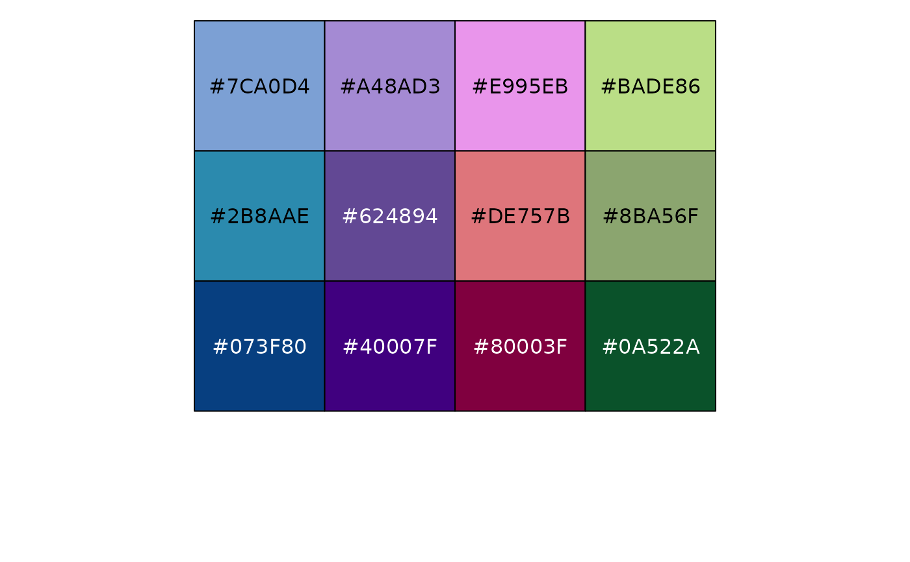

A collection of fill palettes which mirror the colour schemes available in GraphPad Prism.
prism_fill_pal(palette = "colors")Returns a function which takes a single integer as its only argument and returns a character vector of hexadecimal colours. See the examples below for usage.
library(ggplot2)
## list all available fill palettes and their lengths
lengths(ggprism_data$fill_palettes)
#> autumn_leaves beer_and_ales black_and_white blueprint candy_bright
#> 9 9 9 9 9
#> candy_soft colorblind_safe colors diazo earth_tones
#> 9 6 20 9 10
#> evergreen fir flames floral greenwash
#> 9 9 9 12 10
#> inferno magma mustard_field muted_rainbow neon
#> 6 6 9 10 9
#> ocean office pastels pearl plasma
#> 9 9 9 6 6
#> prism_dark prism_light purple_passion quiet shades_of_gray
#> 10 10 9 9 9
#> spring stained_glass starry summer sunny_garden
#> 9 9 5 10 9
#> the_blues viridis warm_and_sunny warm_and_sunny2 warm_pastels
#> 9 6 9 9 9
#> waves winter_bright winter_bright2 winter_soft wool_muffler
#> 5 9 9 9 9
## select some colours from a palette
prism_fill_pal(palette = "summer")(4)
#> [1] "#7DA1D5" "#BDDE85" "#DDAF70" "#DE767C"
## see all the colours in a specific palette
# define a function for convenience
library(scales)
show_palette <- function(palette) {
scales::show_col(
prism_fill_pal(palette = palette)(
attr(prism_fill_pal(palette = palette), "max_n")
)
)
}
# show the colours in the palette "pearl"
show_palette("floral")
